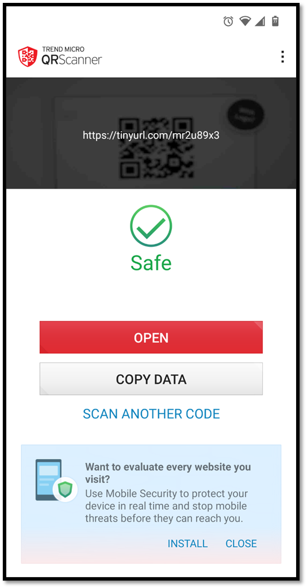
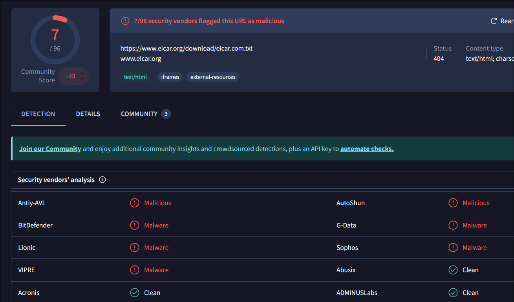

The Problem
The widespread use of QR codes in everyday interactions has introduced a significant security challenge. While QR codes offer a convenient way to access information, they also make it easier for cyber attackers to exploit unsuspecting users. By embedding malicious URLs into QR codes, attackers can lead users to phishing websites, malware downloads, or other harmful content without any immediate warning.
One of the biggest issues with QR codes is their lack of transparency. Unlike traditional links that display the URL in plain text, QR codes hide their destination until the user scans them. This makes it difficult for even experienced users to identify potential threats before engaging with the link. Additionally, attackers often use URL shorteners and redirect chains to disguise malicious links, further complicating efforts to detect dangerous websites.
The increased adoption of QR codes in public places, such as restaurants, retail stores, and transportation hubs, has only amplified these risks. With QR codes becoming a standard method for accessing menus, promotions, and services, the chances of interacting with a harmful link have grown significantly. Many QR code scanners lack built-in security features to verify the safety of the links, leaving users vulnerable to cyber threats.
Why Current QR Scanners are Vulnerable
Currently, there is no QR scanner tool that checks the final destination URL rather than the one directly embedded within the QR code. This leaves a significant vulnerability as attackers can easily use URL shorteners to hide the final malicious destination. A classic example of this flaw can be seen with the Trend Micro QR scanner, which fails to detect the actual malicious file the user would encounter when accessing a shortened URL.
Example with Trend Micro QR Scanner
1. Malicious Actor Shortens URL: A malicious actor places a malicious URL inside a URL shortener.
2. Scanning with Trend Micro QR Scanner: The user scans the QR code using the Trend Micro QR scanner, which only checks the initial shortened URL.

3. Final Malicious Destination: The actual final destination of the shortened URL is a malicious file (Eicar virus example), which the Trend Micro scanner misses.
